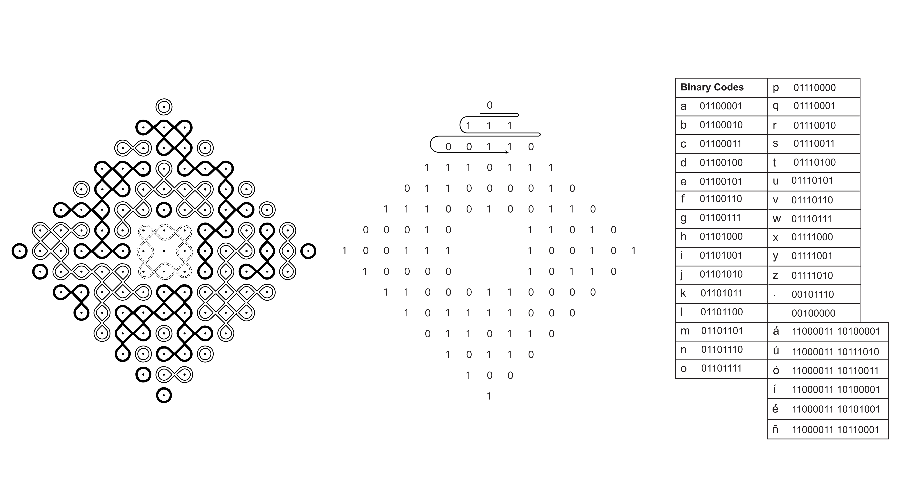

Kolam (en tamil) o Muggu (en telugu) es una forma de arte tradicional del sur de la India. Los kolams son diseños auspiciosos hechos en el suelo con harina de arroz, generalmente en el umbral de la casa. Tradicionalmente realizados por mujeres antes del amanecer, los kolams comprenden patrones matemáticamente complejos con líneas continuas entrelazadas. Estos dibujos son notablemente efímeros, ya que se alteran a lo largo del día por el viento, las pisadas o a medida que los insectos consumen los diminutos granos de harina.
Existen muchas variaciones de diseños de kolam, pero hay una propiedad esencial: deben usar curvas continuas en las que no hay agujeros y el punto de inicio y final es el mismo. Muchos kolams también presentan una cuadrícula de puntos que sigue la secuencia de Fibonacci. No todos los kolams son simétricos, pero muchos utilizan principios de recursión y repetición.
Desarrollé un programa de computadora que permite traducir texto en diseños de kolam. Comencé a trabajar con kolams porque quería traducir el nombre de mi abuela paterna, Swarajyalaxmi, en un kolam como parte de mi ritual de duelo después de su fallecimiento en 2022. kolam.codes es una extensión de ese trabajo, permitiendo a otros traducir nombres o textos de su elección en diseños de kolam.
Para codificar texto en diseños de kolam, primero traduzco cada carácter en un código binario de ocho dígitos (formado solo por 0s y 1s). Luego mapeo este código en mi cuadrícula inicial de puntos (moviendo de izquierda a derecha y de arriba hacia abajo). Utilizo el centro de la cuadrícula como espacio adicional para trabajar con una cuadrícula que puede contener más puntos que caracteres. Usando esta cuadrícula como base, el algoritmo luego llena las secciones con componentes de bucle, asegurándose de nunca conectar puntos asociados con "0" a aquellos asociados con "1".
key:
Referencias:
- Kolam in code -> Lavannya Suressh
- The Kolam Tradition | American Scientist
- Significance of Kolam in Tamil Culture | Sahapedia
- https://www.cmi.ac.in/gift/Kolam.htm